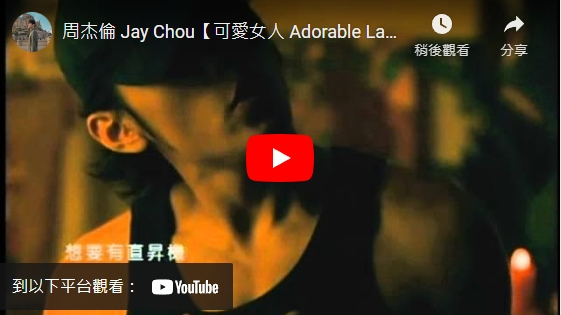

1979年1月18日生於臺灣新北，是知名臺灣男歌手、作曲家、填詞人、導演、演員。共發行13張專輯，參加過10部電影的演出，也當過廣播節目以及電視節目主持人。第一張專輯《Jay》就一舉獲得臺灣金曲獎最佳專輯、最佳製作人、最佳作曲人三項大獎。在第20屆和22屆金曲獎分別以《魔杰座》和《跨時代》兩張專輯拿下最佳國語男歌手獎。擅長創造出多變的風格，尤其以融合中西元素的嘻哈、節奏藍調、抒情搖滾、饒舌和中國風而受歡迎。
周杰倫自小對音樂表現出濃厚的興趣，而且喜歡模仿歌星、演員表演和變魔術。3歲開始學習鋼琴。高中就讀於新北市私立淡江中學第一屆音樂科(本來是想報考華岡藝校，但錯過了報名期間，幸好淡江中學恰巧新設了音樂科)，主修鋼琴，副修大提琴，為將來的音樂發展打下了深厚的基礎。除了音樂外，周杰倫熱愛籃球，在同儕中是高手，球場上的表現常受眾人圍觀；但學科成績不甚理想，故高中畢業時，大學聯考落榜；又因患有僵直性脊椎炎，依據臺灣兵役制度得以免服義務兵役。 周杰倫曾說過表示少年時受到香港樂壇「四大天王」之一張學友的專輯《吻別》的影響，從而喜歡並開始專注於流行音樂。由於他的音樂基礎紮實，令其在流行音樂創作方面如魚得水。
他首次亮相螢光幕前，當時是為參加TVBS-G選秀節目《超級新人王》的高中同學擔任鋼琴伴奏。雖然同學最終獲獎，綜藝天王吳宗憲也是該節目主持人卻對伴奏的周杰倫獨具慧眼，即找他簽入公司，也讓周杰倫到吳宗憲投資的西餐廳去打工。吳宗憲認為其外型不夠突出，而不足以快走紅於幕前，所以先讓其專注歌曲創作的歷練發展。阿爾發音樂中，唯周杰倫作曲與方文山(吳宗憲發掘)作詞的合作作品最受青睞，無形中兩人的合作形成了一種「定律」了。 周杰倫是在97年參加TVBS-G的《超級新人王》，98年開始到他出片之前，寫過數多首歌。出片才是他真正走紅的開始。1999年《落雨聲》是他第一首賣出的歌，由江蕙演唱。
2000年周杰倫依唱片合約內容創作了五十首歌曲後，由吳宗憲欽挑十首，就開始準備製作自己的第一張專輯，吳宗憲提供了新台幣四千萬元作為專輯籌備的部份資金，於當年11月發行周杰倫首張個人專輯《Jay》，並帶周杰倫在自己的節目上大力推銷。此專輯有了別於市場的突破曲風。風格融合了R&B、Hip-Hop、古典和中國風，初步建立了周杰倫的「周式」歌手形象。周杰倫在金曲獎頒獎典禮上稱:「沒有吳宗憲、沒有周杰倫」。憑藉著第一張專輯《Jay》獲得臺灣金曲獎最佳專輯、並一舉奪得臺灣當年最佳流行音樂演唱專輯、最佳製作人和最佳作曲人三項大獎。
2001年9月發行個人第二張專輯《范特西》，專輯名稱來自英文「Fantasy」的音譯；憑藉這張專輯周杰倫在2002年度臺灣第13屆金曲獎頒獎典禮中斬獲「最佳作曲人獎」、「最佳專輯製作人獎」以及「最佳流行音樂演唱專輯獎」三項大獎。
2002年7月發行個人第三張專輯《八度空間》；9月28日個人首次世界巡迴演唱會「THE ONE」於臺北市立體育場拉開帷幕。
2003年2月，出道僅三年便接受美國《時代》雜誌專訪，並成為封面人物；周杰倫是繼王菲、張惠妹之後，第三位出現在《時代》雜誌封面的華人歌手，並被該雜誌讚譽為「新一代亞洲流行天王」；2003年7月，全亞洲超過50家電台定7月16日為周杰倫日，並同步首播其第四張個人新專輯《葉惠美》中的主打歌曲《以父之名》，此後每張專輯必定有一首中國風的歌曲。
2004年7月發行個人第五張專輯《七里香》，並憑藉該專輯首次獲得世界音樂大獎「大中華區最暢銷藝人」；同時，根據國際唱片業協會IFPI的統計，專輯七里香銷量位居年度世界第42位，同年以歌曲《龍拳》首次亮相春節聯歡晚會。
2005年11月發行個人第六張音樂專輯《11月的蕭邦》，自這張專輯周杰倫開始作為音樂總監，並嘗試執導一些自己歌曲的mv；6月23日，主演的電影處女作《頭文字D》全國上映，並憑藉該電影一舉獲得香港電影金像獎，臺灣電影金馬獎雙料最佳新演員獎。
2006年1月，發行EP《霍元甲》，主打歌《霍元甲》是李連杰主演的同名電影主題曲，9月發行個人第七張音樂專輯《依然范特西》，專輯中的中國風歌曲《千里之外》更是找來小哥費玉清一起合唱。
2007年－至今：杰威爾音樂 2007年4月，由周杰倫與多年合作夥伴方文山、楊峻榮三人共同創辦的杰威爾音樂（JVR）有限公司成立；11月2日，發行個人第八張音樂專輯《我很忙》，11月24日周杰倫在中國上海八萬人體育場展開個人第三次世界巡迴演唱會，與此同時，周杰倫的「THE ONE」、「無與倫比」兩次世界巡迴演唱會已先後在美國康乃狄克州、洛杉磯、拉斯維加斯、加拿大、澳大利亞、日本東京、新加坡、馬來西亞吉隆坡、泰國曼谷、香港、臺灣、中國大陸等多個國家地區舉辦多場。
周杰倫在音樂中添加各式元素，並巧妙的融合，不顯突兀。他常將日常聲音或特殊風格的音樂銜接在歌曲中，周杰倫與作詞者方文山、黃俊郎的組合具有豐富故事性與畫面性。
周杰倫擅長以不同的音樂元素來做創作靈感與素材，並進一步融合各式聲音於音樂中，塑造出鮮明的主題意象。
在2000年杰倫組織中對周杰倫首張專輯《Jay》的介紹如下：「專輯中R&B以及New Hip-hop
的新曲，加上古典巴洛克式絃樂伴奏及Band
的加入，形成一種英國式的復古風格，更特別的是，周杰倫嘗試把超高難度，西班牙式風格的絃樂演奏，表現在專輯歌曲中，意境卻出乎意料的極度逼近電影配樂，這種音樂是臺灣目前(指2000年)所沒有的。」周杰倫在演唱不同曲風的歌曲，會採用不同的演唱方式，唱抒情歌曲時，會有略帶鼻音引吭高歌的聲音。
方文山的歌詞，除了主題的多元性之外，就是歌詞的意象與畫面豐富，利用大量華麗古典的詞彙，激發了舊題材重新詮釋的想像空間，營造視覺性與故事性強烈的文字風格。與周杰倫搭配，於是產生了美式曲風與中式歌詞的東西新舊異質組合。
周杰倫的曲風前後期丕變，後期輕快的歌曲增加、昔日深刻的悲歌減少，在日後經常被討論；在胡婉玲《台灣演義》專訪中，提出周杰倫的際遇改變了心境這一說法。
周杰倫的音樂風格在第二張專輯《范特西》後大致成形。往後的專輯就沿著這樣的模式在發展。